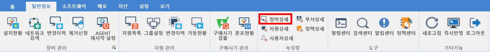

4-4-1. 장비상세
4-4-1. 장비상세
Source: https://www.sweeper.or.kr/etc/manual/4-4-1.html
4-4-1. 장비상세


선택한 장비에 대한 일반적인 상세정보를 볼 수 있는 속성창입니다. 4-1-1. 설치현황에서 장비 추가 혹은 수정 화면에서 설정한 내용이 속성으로 표시됩니다.


화면 설명
-
기본정보 : 에이전트의 기본이 되는 정보입니다.
-
고유키 : 장비 고유키 값 입니다.
- AGENT 버전 : 에이전트 프로그램 버전 정보 입니다.
-
보고일 : 에이전트가 서버에 보고하는 일자와 시간입니다.
-
사용자 정보 : 장비를 사용중인 사용자 정보입니다.
-
자산정보 : 최소한으로 정보입력으로 입력한 정보입니다.
-
자산매핑 : 자산과 장비를 매핑되었는지 여부를 알려줍니다.
- 자산번호 : 관리자가 입력한 자산번호가 나타납니다.
-
구매일 : 관리자가 입력한 구매일이 나타납니다.
-
네트워크 정보 : 장비의 네트워크 정보입니다.
- 시스템 정보 : 장비의 시스템 정보입니다.
-
환경설정 : 에이전트 환경설정 정보입니다.
-
NAT 접속 : 공유기나 라우터를 통해 NAT되어 서버와 연결된 경우, 표시됩니다.
- 연결유지모드 : 서버와 에이전트간의 연결을 유지합니다.
- 업그레이드 보류 : 업그레이드 받지 않도록 설정합니다.
- 사용자 정보입력요청 : 에이전트 재기동시 사용자 정보입력 요청할 때 표시합니다.
-
테스트장비 : 테스트 장비로 입력할 때 사용합니다.
-
부가정보 : 부가입력 정보입니다.
© Copyright SWeeper Inc.. All Rights Reserved